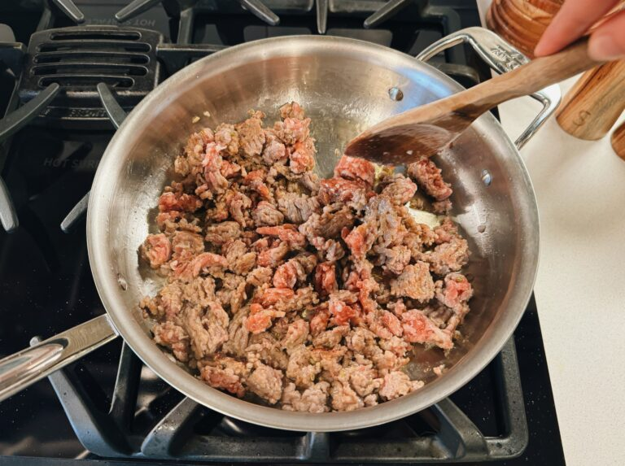
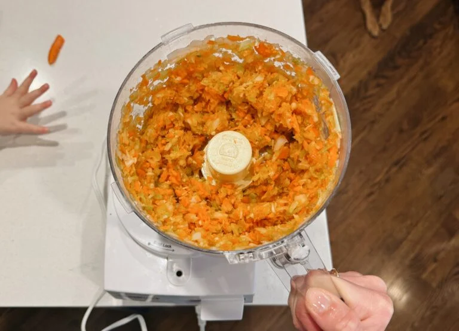
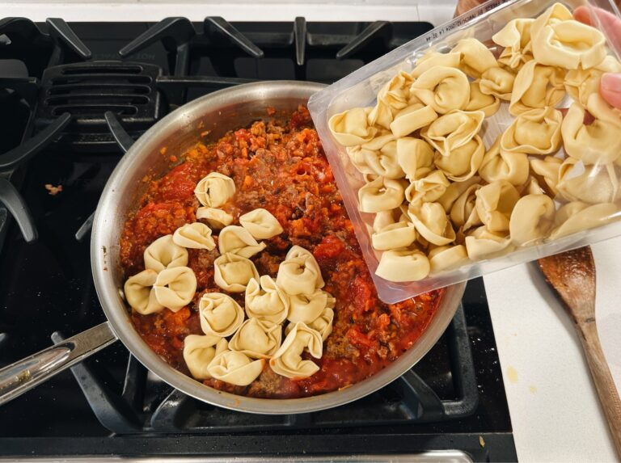
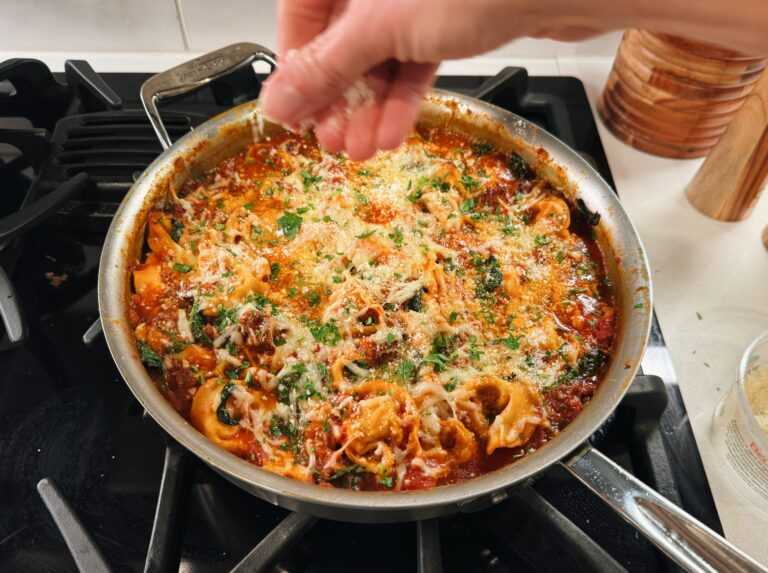
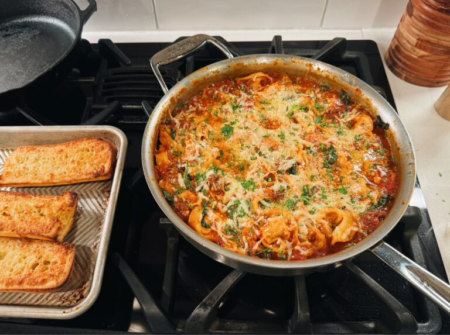

This Baked Tortellini with a sausagey tomato sauce is pretty basic but it’s ohhhh so good. It’s my comfort food weakness right now. Highly recommend dunking in there with some buttery garlic bread!
I started making this as a cozy weekend moment – we’re having a friend over for dinner, we’re ready to tuck in at home, we just want a big pan of carby delight to dive into with butter-soaked crispity pieces of garlic bread.
And then it moved into, like, I can’t wait till the weekend for that so let’s make that again on Tuesday night for dinner.
And now it’s just in the permanent repertoire! Unlike the AFC, it’s not really a nightly situation – this guy is heavy and rich and unapologetically extra, and once a week is about all I can handle. So I save it for a night when I am extra hungry and looking for a comfort food hug, and it delivers every time.
I loosely based this around one of my favorite soups of all time – Ang’s Tortellini Soup. But since it’s already pretty heavy with the cheese on top, I don’t think it needs the cream in there. That said, follow your heart. If you’re wanting some creaminess or a few dollops of garlic herb Rondele in there (a weirdly specific vision I’ve had), please don’t deny yourself this joy.
And DO NOT SKIP the garlic bread – I know it’s an extra step, and you can buy it if you must! But dunking a chunk of garlic bread into that skillet and building a perfect bite with sauce, bread, and a little piece of cheesy tortellini is an elite experience that I don’t want you to miss out on.
1. Brown Your Sausage
2. Chop and Sauté Your Veggies.
3. Add sauce and tortellini
4. Bake that Baby Up Under a Cheese Blankie.
5. Eat This With Garlic Bread. Please. Yum.
